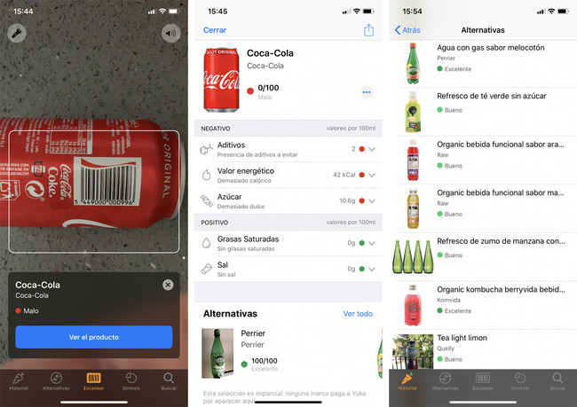

1. Escaneo y Análisis Detallado de Productos:
Yuka te permite escanear fácilmente los códigos de barras de productos alimenticios y cosméticos. Al instante, la aplicación te proporciona un análisis detallado de la composición del producto, evaluando su impacto en tu salud. Descubre la calidad nutricional de los alimentos y la seguridad de los ingredientes cosméticos de manera rápida y sencilla.